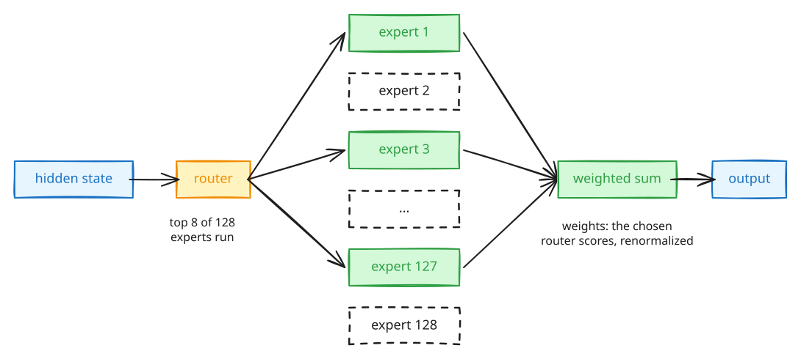
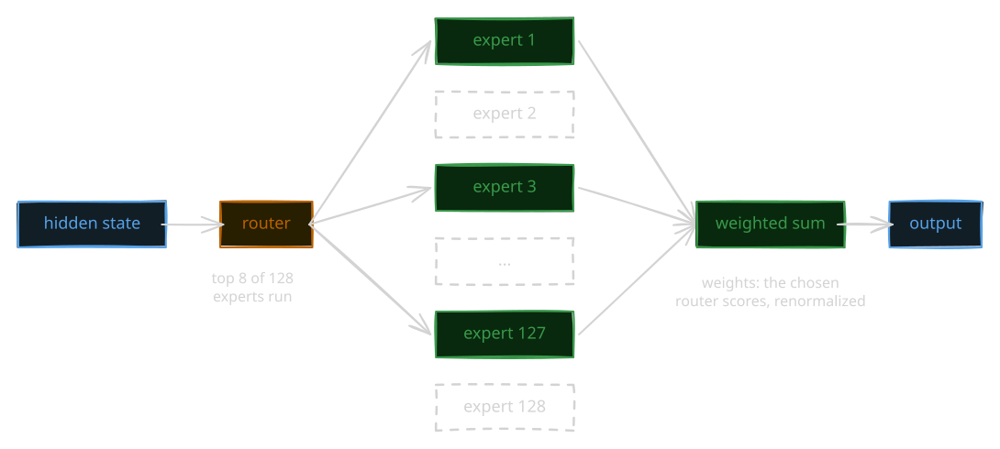

6.3 Mixture of experts


The largest open models are mixtures of experts (MoE). An MoE layer has many MLPs, the experts, instead of one, and a small router sends each token to only a few of them. The model holds the parameters of all its experts, while each token pays for only a fraction of them. This section builds an MoE layer, checks it against Hugging Face’s Qwen3-MoE implementation, and then spreads the experts across devices.
No real MoE checkpoint fits on a laptop, so this section uses Qwen3-MoE’s architecture at a small size with random weights, a common way to test large-model code. As in Section 4.1, the test compares one layer with a reference implementation.
Show the setup 32 lines
import json
import logging
import warnings
from pathlib import Path
import numpy as np
import plotly.graph_objects as go
import torch
from huggingface_hub import hf_hub_download
from max import functional as F
from max.driver import CPU
from max.dtype import DType
from max.tensor import Tensor, default_device, default_dtype
from max.tensor.sharding import (
DeviceMapping,
DeviceMesh,
Replicated,
Sharded,
auto_reshard,
)
from plotly.subplots import make_subplots
from transformers import AutoConfig
from transformers.models.qwen3_moe.modeling_qwen3_moe import (
Qwen3MoeSparseMoeBlock,
)
from minillm import viz
from minillm.device import pick_device
logging.getLogger("max").setLevel(logging.ERROR)
warnings.filterwarnings("ignore", message="The eager interpreter failed")
DEVICE = pick_device() # a GPU if MAX finds one, otherwise the CPU
How big, and how sparse
Qwen3-30B-A3B is a typical MoE model. Its name gives its total parameters, 30 billion, and its active ones, about 3 billion:
real = json.loads(
Path(hf_hub_download("Qwen/Qwen3-30B-A3B", "config.json")).read_text()
)
E, K, H, I = (
real["num_experts"],
real["num_experts_per_tok"],
real["hidden_size"],
real["moe_intermediate_size"],
)
per_expert = 3 * H * I
print(f"{E} experts per layer, {K} chosen per token")
print(
f"expert weights per layer: {E * per_expert / 1e6:.0f}M, used per token: {K * per_expert / 1e6:.0f}M"
)
128 experts per layer, 8 chosen per token
expert weights per layer: 604M, used per token: 38M
Every token uses 8 of the 128 experts, so it touches only a sixteenth of each layer’s expert weights. Adding experts adds parameters without adding work per token. The cost moves to memory, since every expert must be loaded somewhere, which is why MoE models are usually served across several GPUs. The handbook’s parallelism strategies page covers expert parallelism, which the end of this section implements.
The layer
An MoE layer replaces the MLP. For each token:
- The router, a
Linearfrom the hidden size to the number of experts, scores every expert. Softmax turns the scores into probabilities. - The
Kmost probable experts are chosen, and their probabilities are renormalized to sum to 1. Qwen3-MoE’s config asks for this withnorm_topk_prob: true; a model that sets it tofalseweights the experts by their raw probabilities, so reusingMoEfor one means dropping that step. - Each chosen expert, a SwiGLU MLP like the one in Section 1.4, processes the token, and the outputs are summed, weighted by those probabilities.


In symbols, with router weights \(W_r\), the set \(\mathcal{T}\) of the \(K\) most probable experts, and expert \(e\)’s MLP \(E_e\):
\[p = \mathrm{softmax}(W_r x), \qquad y = \sum_{e \in \mathcal{T}} \frac{p_e}{\sum_{j \in \mathcal{T}} p_j} \, E_e(x)\]
The experts’ weights are stored stacked, with the expert as the first axis: one tensor for the fused gate and up projections, and one for the down projection. That is the layout of Hugging Face’s Qwen3-MoE module; the checkpoint files store each expert’s projections separately. This version computes every expert on every token and multiplies the unselected ones by zero. That wastes work, but it is simple and exact, and the last part of this section shows that it is easy to distribute.
Show Experts, MoE 66 lines
from __future__ import annotations
from max import functional as F
from max.dtype import DType
from max.nn import Linear, Module
from max.tensor import Tensor
class Experts(Module):
"""The stacked weights of every expert: gate and up projections fused."""
def __init__(
self, num_experts: int, hidden: int, intermediate: int
) -> None:
self.gate_up_proj = Tensor.zeros(
[num_experts, 2 * intermediate, hidden]
)
self.down_proj = Tensor.zeros([num_experts, hidden, intermediate])
class MoE(Module):
"""A mixture-of-experts layer with top-k routing, as in Qwen3-MoE."""
def __init__(
self, num_experts: int, top_k: int, hidden: int, intermediate: int
) -> None:
self.num_experts, self.top_k, self.intermediate = (
num_experts,
top_k,
intermediate,
)
self.gate = Linear(hidden, num_experts, bias=False) # the router
self.experts = Experts(num_experts, hidden, intermediate)
def routing(self, x: Tensor) -> Tensor:
"""Returns each token's weight for each expert, ``[tokens, experts]``,
zero for experts the token wasn't routed to."""
tokens = x.shape[0]
weights, chosen = F.top_k(F.softmax(self.gate(x)), self.top_k)
weights = weights / weights.sum(axis=-1)
ids = Tensor.arange(self.num_experts, dtype=DType.int64, device=x.mesh)
one_hot = (
chosen.reshape([tokens, self.top_k, 1])
== ids.reshape([1, 1, self.num_experts])
).cast(x.dtype)
return (
(one_hot * weights.reshape([tokens, self.top_k, 1]))
.sum(axis=1)
.reshape([tokens, self.num_experts])
)
def forward(self, x: Tensor) -> Tensor:
"""``x`` is ``[tokens, hidden]``."""
tokens, hidden = x.shape
gate_up = x.reshape(
[1, tokens, hidden]
) @ self.experts.gate_up_proj.transpose(1, 2)
gate, up = (
gate_up[:, :, : self.intermediate],
gate_up[:, :, self.intermediate :],
)
outputs = (F.silu(gate) * up) @ self.experts.down_proj.transpose(
1, 2
) # [E, T, H]
weights = self.routing(x).T.reshape([self.num_experts, tokens, 1])
return (weights * outputs).sum(axis=0).reshape([tokens, hidden])
Saved to minillm/moe.py.
Check it against Qwen3-MoE
Build Hugging Face’s Qwen3-MoE block at a small size, 8 experts with 2 per
token, fill it with random weights, and load the same weights into yours.
The parameter names match, so load_state_dict takes the PyTorch state
directly:
torch.manual_seed(0)
small = AutoConfig.from_pretrained("Qwen/Qwen3-30B-A3B")
(
small.hidden_size,
small.moe_intermediate_size,
small.num_experts,
small.num_experts_per_tok,
) = 64, 32, 8, 2
reference = Qwen3MoeSparseMoeBlock(small).float().eval()
for p in reference.parameters():
torch.nn.init.normal_(p, std=0.2)
state = {name: p.detach().numpy() for name, p in reference.state_dict().items()}
print({name: w.shape for name, w in state.items()})
with default_device(DEVICE), default_dtype(DType.float32):
moe = MoE(num_experts=8, top_k=2, hidden=64, intermediate=32)
moe.load_state_dict(state)
x = np.random.default_rng(0).standard_normal((10, 64)).astype(np.float32)
with torch.no_grad():
expected = reference(torch.from_numpy(x)[None])[0].numpy()
ours = moe(Tensor(x, device=DEVICE)).to_numpy()
print(f"max difference {np.abs(ours - expected).max():.1e}")
assert np.abs(ours - expected).max() < 1e-4
{'experts.gate_up_proj': (8, 64, 64), 'experts.down_proj': (8, 64, 32), 'gate.weight': (8, 64)}
max difference 3.8e-06
Where the tokens go
The routing matrix shows which experts each token uses. Count the tokens per expert for a larger batch, then make the router favor expert 0 by scaling its row of router weights, and count again:
batch = Tensor(
np.random.default_rng(1).standard_normal((512, 64)).astype(np.float32),
device=DEVICE,
)
weights_np = moe.routing(batch).to_numpy()
load = (weights_np > 0).sum(axis=0)
print("tokens per expert:", load, " ideal:", 512 * 2 // 8)
assert load.sum() == 512 * 2
def load_with_bias(factor: float) -> np.ndarray:
router = state["gate.weight"].copy()
router[0] *= factor
with default_device(DEVICE), default_dtype(DType.float32):
biased = MoE(num_experts=8, top_k=2, hidden=64, intermediate=32)
biased.load_state_dict({**state, "gate.weight": router})
return (biased.routing(batch).to_numpy() > 0).sum(axis=0)
loads = {factor: load_with_bias(factor) for factor in [1, 2, 5]}
for factor, counts in loads.items():
print(f"expert 0's row x{factor}: tokens per expert {counts}")
assert (loads[1] == load).all()
tokens per expert: [122 116 157 121 117 134 122 135] ideal: 128
expert 0's row x1: tokens per expert [122 116 157 121 117 134 122 135]
expert 0's row x2: tokens per expert [178 109 144 116 108 130 113 126]
expert 0's row x5: tokens per expert [227 104 136 109 103 121 104 120]
Show the code 60 lines
fig = make_subplots(
rows=1,
cols=2,
column_widths=[0.6, 0.4],
horizontal_spacing=0.2,
subplot_titles=[
"Routing weights of the first 32 tokens",
"Tokens per expert, all 512",
],
)
fig.add_trace(
go.Heatmap(
z=np.where(weights_np[:32] > 0, weights_np[:32], np.nan),
colorscale=viz.SEQUENTIAL,
zmin=0,
zmax=1,
xgap=2,
ygap=2,
colorbar=dict(title="weight", thickness=12, x=0.5),
hovertemplate="token %{y} -> expert %{x}: weight %{z:.2f}<extra></extra>",
),
row=1,
col=1,
)
steps = [
[
go.Bar(
x=np.arange(len(counts)),
y=counts,
marker_color=[viz.ORANGE] + [viz.BLUE] * (len(counts) - 1),
showlegend=False,
xaxis="x2",
yaxis="y2",
hovertemplate="expert %{x}: %{y} tokens<extra></extra>",
)
]
for counts in loads.values()
]
fig.update_xaxes(title_text="expert", dtick=1, showgrid=False)
fig.update_yaxes(
title_text="token", autorange="reversed", showgrid=False, row=1, col=1
)
fig.update_yaxes(
title_text="tokens routed",
range=[0, 1.1 * max(c.max() for c in loads.values())],
row=1,
col=2,
)
fig.update_layout(title="Top-2 routing over 8 experts", height=520)
labels = [f"x{factor}" for factor in loads]
viz.with_slider(fig, steps, labels, "expert 0's router row ")
fig.add_hline(
y=512 * 2 / len(load),
line=dict(color=viz.INK_SECONDARY, dash="dash"),
row=1,
col=2,
annotation_text="even split",
annotation_position="top right",
)
viz.show(fig)
Every token went to exactly two experts. Move the slider to scale expert 0’s row of router weights: its scores grow, so more tokens pick it, and its bar rises to nearly twice the even split at x5 while the others shrink. How evenly a batch spreads across experts matters in practice: an expert that gets far more tokens than the others becomes the slowest part of the layer. MoE models are usually trained with a load-balancing term in the loss that pushes the router to spread tokens evenly, and serving systems monitor the load on each expert.
This dense version computes all 8 experts for every token, 4 times the work that the 2 chosen experts need. Production kernels instead group the tokens by expert and run one matrix multiplication per expert over only its tokens (a grouped GEMM), which removes the waste:
per_expert_small = 3 * 64 * 32 # gate, up, and down projections
dense = 2 * 512 * 8 * per_expert_small
sparse = 2 * 512 * 2 * per_expert_small
print(
f"dense: {dense / 1e6:.1f} MFLOP, routed: {sparse / 1e6:.1f} MFLOP, {dense / sparse:.0f}x less"
)
dense: 50.3 MFLOP, routed: 12.6 MFLOP, 4x less
Expert parallelism
The experts are independent, so they can live on different devices. With 8 experts on 4 devices, each device holds 2. Every device receives every token, runs its own experts, and weights their outputs; the final sum over experts spans devices, which takes one all-reduce. On the simulated mesh from Section 2.1, the only change is to shard the stacked expert weights along the expert axis:
mesh = DeviceMesh((CPU(),) * 4, (4,), ("ep",))
with default_device(mesh), default_dtype(DType.float32):
ep_moe = MoE(num_experts=8, top_k=2, hidden=64, intermediate=32)
by_expert = DeviceMapping(mesh, (Sharded(0),))
ep_moe.experts.gate_up_proj = ep_moe.experts.gate_up_proj.to(by_expert)
ep_moe.experts.down_proj = ep_moe.experts.down_proj.to(by_expert)
ep_moe.load_state_dict(state)
print(ep_moe.experts.down_proj.mapping)
with warnings.catch_warnings(record=True) as caught:
warnings.simplefilter("always")
with auto_reshard(mode="warn"):
ep_out = ep_moe(Tensor(x, device=DeviceMapping(mesh, (Replicated(),))))
for w in caught:
if "reshards" in str(w.message):
print(w.message)
print(
f"max difference from the reference: {np.abs(ep_out.to_numpy() - expected).max():.1e}"
)
assert np.abs(ep_out.to_numpy() - expected).max() < 1e-4
DeviceMapping(DeviceMesh(ep=4), [Sharded(axis=0)])
mul(lhs, rhs) reshards lhs
lhs : float32[8, 10, 1]@mesh(ep=4){"ep":R}
rhs : float32[8, 10, 64]@mesh(ep=4){"ep":S0}
region : auto_reshard(DEFAULT_TRANSITIONS, mode="warn")
decided per mesh axis
axis lhs rhs -> out collective bytes status
"ep" lhs{R->S0} rhs{S0} -> S0 local_slice(lhs) 1.25 chosen, reshards lhs
lhs{R} rhs{S0->R} -> R allgather(rhs) 15360
lhs{R} rhs{S0->S2} -> S2 all_to_all(rhs) 15360
lhs{R->S1} rhs{S0->S1} -> S1 local_slice(lhs), all_to_all(rhs) 15361.2
lhs{R->P} rhs{S0->R} -> P keep_one_copy(lhs), allgather(rhs) 15361.2 not allowed
result lhs{"ep":S0} rhs{"ep":S0} -> {"ep":S0}
lhs = transfer_to(lhs, DeviceMapping(mesh, (Sharded(0),)))
with auto_reshard(mode="silent"):
at <cell>:67 in forward()
max difference from the reference: 2.9e-06
The output matches. MAX resharded the routing weights to match the
experts’ layout, so each device multiplies only its own experts’ slice, and
the weighted outputs come out as partial sums that to_numpy() all-reduces.
This dense form sends every token to every device. Expert-parallel serving sends each token only to the devices that hold its chosen experts, an all-to-all exchange, and returns the results with a second one. With many experts this moves far less data, but the communication is uneven and depends on the routing. MAX serves MoE models such as GPT-OSS and DeepSeek, and supports expert parallelism across GPUs with all-to-all dispatch and combine steps.
Exercises
- Increase
top_kto 8 (every expert). Does the output equal a weighted sum of 8 dense MLPs? What would the model lose? - Implement the routed version for one device: for each expert, gather its
tokens, run the MLP on them only, and scatter the results back. Check it
against
MoE. - With the experts spread over 4 devices as above, 2 per device, how many token copies does each device process at each slider setting of the routing figure? What does the busiest device do to the time of an expert-parallel step?
What you built
Chapter 6 extended your model with three
features of current open models: normalized queries and keys, sliding-window
attention, and mixtures of experts.
Chapter 7 serves your own architecture with
max serve, benchmarks it, and constrains its output.